docs/COMPARISON_REPORT_2026-10-19.md. The paginated
PDF edition contains the same
content with a cover and a figure gallery.Symmetrix-Polar: Consolidated Speed and Accuracy Comparison
Date: 2026-10-19 (v29 / v30 evidence cut-off, ~08:20 UTC; later measured rows are marked with their source logs) Scope: PolarMACE (MACE-Polar) support in the Symmetrix-XL C++/Kokkos engine. Basis: completed JSONs, gate logs, and reports only. No engine/model code was modified while preparing this document.
Status legend: PASS = measured and accepted against its gate; FAIL = measured and rejected; pending = work is in flight and no completed artifact exists yet. No pending result is included as a performance claim.
0. Summary
| Item | Result |
|---|---|
| Single-rank v29 speed, 128 atoms, deterministic | 183.78 ms/eval (v28: 6966.79 ms, 37.91x) |
| Final kernel round, 128 atoms, full model | 122.21 ms/eval (1.50x vs v29; polar-off 40.71 ms, 2.14x) |
| Final kernel round, 432 atoms, full model | 293.34 ms/step (1.63x vs 477.83; polar-off 47.65 ms) |
| Single-rank v29 speed, 1024 atoms, deterministic | 1007.72 ms/eval (v28: 7795.59 ms, 7.74x) |
| Same-model ablation, 128 atoms (v29) | backbone-only 87.24 ms -> full PolarMACE 183.50 ms; polar layer adds 96.26 ms (2.10x) |
| Accuracy gates, modules 5-8 (final build) | all PASS |
| End-to-end engine vs PyTorch, 32 frames (final build) | 32/32 PASS, max energy error 1.034e-6 eV, max force error 1.624e-7 eV/A |
| LAMMPS single point, 1 rank / exact 2 rank (final build) | PASS / PASS (dE 2.91e-11 eV; max dF 2.62e-14 / 1.69e-6 eV/A) |
| LAMMPS NVT MD, 50 steps | PASS, no lost atoms, Etot span 0.21295 eV |
| RBE production use | rejected by the force gate (RMS_F 4.10e-2 to 1.03e-2 eV/A; 33 A p=800 is 1.23e-2, all >> 1e-4 eV/A) |
| 1-hop MPI mode | rejected by the force/energy gates (max dF 4.116e-3 eV/A, dE 7.94e-5 eV) |
| MPI H1 exact 2 rank | PASS (dE 2.91e-11 eV, max dF 1.41e-15 eV/A); 3.22x faster than exact 2-hop, 8.7x slower than 1 rank on one shared GPU |
| MH-1/direct/JIT fast path | architecturally blocked; the upstream linear engine cannot load MACE_Nonlinear |
| PyTorch MACE-Polar reference speed | 94.0 ms/eval median vs final engine 122.2 ms -> engine 1.30x slower (was 1.95x) for the full model |
The v29 optimization removed two concrete bottlenecks: per-node-serial UVU tensor products and a ~0.7 s/eval device-environment probe on non-JIT models. All numerical gates are unchanged after the optimization.
1. Scope and model
1.1 What is being compared
All "same-model" statements below compare the same PolarMACE checkpoint
(MACE-POLAR-1-M.model) exported to the engine JSON
polar_symmetrix_probe.json, evaluated in the same 128-atom NH3 box
(14.736126 A cubic, periodic) with the same float64 energy+force path. The
linear MACE-OFF23 comparison is explicitly not the same model and is labelled
wherever it appears.
| Property | Full PolarMACE | Nonlinear backbone (polar off) | Linear MACE-OFF23 medium |
|---|---|---|---|
JSON model_type |
MACE_Nonlinear |
MACE_Nonlinear |
MACE |
| Engine | MaceNonlinearKokkosT |
MaceNonlinearKokkosT |
MACEKokkos |
| JSON size (bytes) | 316,958,257 | 269,988,335 | 37,330,647 |
| Elements | 83 | 83 | 10 |
r_cut |
6.0 A | 6.0 A | 5.0 A |
| Interactions / l_max | 2 / 3 | 2 / 3 | standard MACE |
| Channel pattern | 512 -> 128, nonlinear bias readout | 512 -> 128, nonlinear bias readout | linear readout |
| Polar layer | full SCF + Ewald/RBE | disabled | inert placeholder |
| Execution mode | materialized (no direct/JIT) | materialized | materialized or generic streamed |
| Typical use here | production target | same-model backbone ablation | engine-path reference only |
Hardware/software: one NVIDIA A100-80GB per run, CUDA 12 sm80 backend,
Kokkos 5.x, float64, energy+forces. Times are LAMMPS Loop time or Python
median_ms over 20 evals, as noted. The GPU was shared during part of the
campaign; the v29 final figures are the uncontended reruns. Absolute times are
therefore contention-sensitive, while same-run ratios are stable.
1.2 Linear vs nonlinear engines
"Linear" and "nonlinear" here are Symmetrix engine/model families, not linear-vs-nonlinear MLIPs:
MACEKokkos (linear engine) |
MaceNonlinearKokkosT (nonlinear engine) |
|
|---|---|---|
Accepted model_type |
MACE, MACEField |
MACE_Nonlinear |
| JSON format | format-version 2 compact radial | format-version 3 nonlinear |
| Readout | standard linear MACE readout | nonlinear readout (nonlinear, NonLinearBiasReadoutBlock for PolarMACE) |
| Polar blocks | polar_blocks_enabled() returns false |
full polar block set and SCF pipeline |
| Direct gate | supports_streamed_edges() = uses_compact_radial |
supports_streamed_edges() = mh1_fast_path |
| H1 MPI | first-interaction hidden node state | materialized node-feature exchange only |
The upstream linear Kokkos engine cannot load MACE_Nonlinear at all.
MACEKokkos::load_from_json rejects it at mace_kokkos_model.cpp:165-167 with:
MACE_Nonlinear JSON must be loaded through the nonlinear MACE Kokkos evaluator,
not legacy MACEKokkos.
The naming "H1" is a collision: in the linear engine H1 is the first-interaction
hidden state; it is not the MACE-MH-1 model family. No PolarMACE layer can be
delegated to MACEKokkos, and the linear engine's mpi_message_passing path
cannot be reused for PolarMACE.
1.3 MH-1 fast-path status
PolarMACE cannot use the current MACE-MH-1 direct/JIT fast path. The engine's family descriptor rejects it with:
MH-1 node, edge, and hidden irreps are inconsistent.
This is architectural, not an export defect. The original checkpoint has the same architecture as the JSON. The four deviations from the admitted MH-1 family are:
- second interaction uses
128x0e+128x1oedge features instead of the first interaction's512x0e+512x1o; - second interaction keeps a vector component in
hidden_irreps(512x0e+512x1oinstead of scalar-only512x0e); - second product returns
512x0e+512x1oinstead of scalar-only512x0e; - second readout is
NonLinearBiasReadoutBlock(with a learnedlinear_midstage) instead ofNonLinearReadoutBlock.
A v3 MH1_UVU contract is present in the JSON, but it covers only the
per-interaction UVU tensor products and does not establish v4 node-program
family compatibility. The v4 contract generator fails first at
products[1] output irreps are outside the MH-1 support matrix. Re-exporting
(Route A) cannot fix this without changing the learned function; relaxing only
the gate (Route C) is numerically incorrect and is also not a speed win. See
docs/design/MH1_FASTPATH_FEASIBILITY.md for the full rejection chain and the
staged B1-B4 route assessment. No speedup from MH-1 is claimed anywhere in this
report.
2. Accuracy and correctness gates
2.1 Module gates 5-8 and end-to-end
| Gate | Metric | Tolerance | Measured | Verdict |
|---|---|---|---|---|
| Module 5, density (12 items) | max relative density error | rel <= 1e-6 | 4.22e-8 | PASS |
| Module 5, density (12 items) | max absolute density error | abs <= 5e-6 | 6.689e-8 | PASS |
| Module 5, stages (11 items) | max relative stage error | rel <= 1e-6 | 7.13e-8 | PASS |
| Module 5, pairing | engine state -> fixture step mapping | exact | ['step1','step2','step2'] for all 4 molecules |
PASS |
| Module 6, Coulomb | max rho-hat relative error | rel <= 1e-6 | 1.26e-15 | PASS |
| Module 6, Coulomb | max dE relative / absolute | rel <= 1e-6; abs <= 5e-6 eV | 8.43e-16 / 5.551e-16 eV | PASS |
| Module 6, Coulomb | max end-to-end energy error | informational | 1.491e-8 eV | PASS |
| Module 7, local electron | max stage absolute error | abs <= 5e-6 or rel <= 1e-6 | 2.230e-5 abs (passes on the relative criterion) | PASS |
| Module 7, local electron | max output absolute error | abs <= 1e-6 | 4.038e-7 | PASS |
| Module 8, forces | max finite-difference error | <= 1e-3 | 5.783e-4 | PASS |
| Module 8, forces | max parity vs PyTorch | <= 1e-3 | 7.191e-7 | PASS |
| Module 8, forces | max sum-of-forces residual | exact translation invariance | 1.776e-14 | PASS |
| End-to-end, 32 frames | frames within tolerance | 32/32 | 32/32 | PASS |
| End-to-end, energy | max relative / absolute | rel <= 1e-6; abs <= 5e-6 eV | 1.1e-11 / 1.034e-6 eV | PASS |
| End-to-end, forces | max force error | <= 1e-4 eV/A | 1.624e-7 eV/A (mean max 9.456e-8) | PASS |
| End-to-end, geometry | max position drift | 0 | 0.0 A | PASS |
Notes:
- Module 5 evaluated 12 density items (4 molecules x 3 gated step comparisons)
plus 11 stage tensors. The separate "anchor" field-independent density
comparison (rel up to 9.57e-8) is recorded but not part of the module-5 gate.
- Module 7 passes because its criterion is abs <= 5e-6 OR rel <= 1e-6; the
worst absolute stage item (co2-f1, 2.230e-5) is at reference scale 351.146
and passes on the relative criterion.
- Module 8 also reports |polar|max between 3.0e-3 and 4.7e-2 eV/A across
configurations, confirming the polar force term is not negligible.
2.2 RBE statistical gate
Source: results/polar_rbe_gate_v29.json, log polar_rbe_gate_v29opt.log.
| Metric | Tolerance / criterion | Measured | Verdict |
|---|---|---|---|
| Slope of log RMS_F vs log p | ideal -0.5 | -0.49885 | PASS |
| Same-seed reproducibility | bitwise energy; dF ~ 0 | dE = 0; max dF = 6.141e-16 eV/A | PASS |
| Different-seed response | non-zero | dE = 0.1003 eV; dF = 9.365e-2 | PASS |
| RMS_F at p = 50 | decreasing | 4.0988e-2 eV/A | statistical PASS |
| RMS_F at p = 200 | decreasing | 2.1426e-2 eV/A | statistical PASS |
| RMS_F at p = 800 | decreasing | 1.0280e-2 eV/A | statistical PASS |
| Mean dE at p = 50 / 200 / 800 | unbiased (n=10) | -5.139e-2 / -2.344e-2 / +1.469e-3 eV | PASS |
| Max abs dE at p = 50 / 200 / 800 | monitored | 1.890e-1 / 1.426e-1 / 2.936e-2 eV | monitored |
The RBE estimator is unbiased and converges at the expected -1/sqrt(p) rate, but its force RMS at every measured p is two to three orders of magnitude above the 1e-4 eV/A production force gate. Under the project's gate-as-minimum rule (a speed mode is usable only if every accuracy gate still passes), RBE is accepted as a sampling/convergence gate but rejected for production force evaluation. See Section 3.6 for its 33 A timings.
2.3 LAMMPS pair-style and MD gates
Sources: results/polar_lammps_parity.json,
results/polar_lammps_parity_mpi2.json, results/polar_md.json, logs
polar_lammps_parity_v29final.log, polar_lammps_md_v29final.log,
polar_lammps_md_mpi2_n32.log.
| Gate | Metric | Tolerance | Measured | Verdict |
|---|---|---|---|---|
| LAMMPS single point, 1 rank | dE vs engine | abs <= 5e-5 eV | 2.910e-11 eV | PASS |
| LAMMPS single point, 1 rank | max dF vs engine | <= 1e-4 eV/A | 2.622e-14 eV/A | PASS |
| LAMMPS single point, 1 rank | max position drift | monitored | 4.974e-14 A | PASS |
| LAMMPS single point, exact 2 rank | dE vs engine | abs <= 5e-5 eV | 2.910e-11 eV | PASS |
| LAMMPS single point, exact 2 rank | max dF vs engine | <= 1e-4 eV/A | 1.687e-6 eV/A | PASS |
| LAMMPS single point, 1-hop 2 rank | dE vs engine | abs <= 5e-5 eV | 7.937e-5 eV | FAIL |
| LAMMPS single point, 1-hop 2 rank | max dF vs engine | <= 1e-4 eV/A | 4.116e-3 eV/A | FAIL |
| LAMMPS NVT MD, 128 atoms | completion / lost atoms / finite | 50/50, none, finite | 50/50, none, finite | PASS |
| LAMMPS NVT MD, 128 atoms | Etot span (relative to first step) | monitored | 0.21295 eV (25 fs) | PASS |
| LAMMPS NVT MD, 128 atoms | temperature | 300 K target | mean 276.81 K, min 188.96, max 335.95 | PASS |
| LAMMPS NVT MD, 128 atoms | pressure | monitored | 657.5 - 3231.3 bar | PASS |
| LAMMPS NVT MD, 128 atoms | throughput | monitored | 493.662 ms/step | PASS |
| MPI NVT MD, 32 atoms | completion / lost atoms / Etot span | 20 steps, none | 20/20, none, 0.013359 eV | PASS |
| MPI 4 rank, 128 atoms | runnable on one GPU | must fit device memory | ghost workspace 4.5-6.9 GiB; OOM | FAIL (resource) |
The 1-hop mode is 2.86x faster than exact 2-hop (1809.3 vs 5167.05 ms) but fails both the energy and force gates; it is not a usable approximation.
3. Speed
3.1 Single-rank v28 vs v29
Source: mlip/bench/polar_perf_v28.json and
results/polar_perf_v29.json (20 evals each, median, energy+forces,
128-atom NH3 frame 0, 1024-atom 2x2x2 supercell).
| Configuration | v28 (ms/eval) | v29 (ms/eval) | Speedup | Delta |
|---|---|---|---|---|
| 128 atoms, deterministic | 6966.79 | 183.78 | 37.91x | -6783.0 ms |
| 128 atoms, RBE p = 50 | 6995.58 | 177.60 | 39.39x | -6818.0 ms |
| 128 atoms, RBE p = 200 | 6962.87 | 186.30 | 37.38x | -6776.6 ms |
| 128 atoms, RBE p = 800 | 7019.89 | 219.05 | 32.05x | -6800.8 ms |
| 1024 atoms, deterministic | 7795.59 | 1007.72 | 7.74x | -6787.9 ms |
Model load also dropped from ~48.0 s (v28) to ~12.4 s (v29) for the deterministic case (12.95 / 12.91 / 12.89 s for RBE p=50/200/800).
Data-quality note. The stage report quotes 6951.7 ms for the v28
deterministic row. That is the energy-only median in
perf_breakdown_v28.log; the benchmark JSON for the same 20-eval
energy+force run is 6966.79 ms. This report uses the JSON value so all
v28/v29 rows use the same measurement definition.
3.2 Same-model ablation: backbone vs full PolarMACE
Source: results/engine_compare.json (LAMMPS single-step Loop time,
128-atom NH3 box, one A100).
| Configuration | Model | ms/eval | Relative to backbone |
|---|---|---|---|
| Nonlinear backbone only (polar blocks off) | polar_symmetrix_probe_polaroff.json |
87.24 | 1.00x |
| Full PolarMACE v29 | polar_symmetrix_probe.json |
183.50 | 2.10x |
| Polar layer increment (full - backbone) | same model, polar on vs off | 96.26 | 52.5% of full |
| leoff variant | polar_symmetrix_probe_leoff.json |
pending | model exists (397,979,620 B); no timing JSON yet |
This is the clean same-model isolation: the nonlinear backbone is 87.2 ms and the polar layer adds 96.3 ms, i.e. the full model is 2.10x the backbone. The "leoff" variant (local-electron off) has a model file but no completed timing run, so it is marked pending rather than estimated.
3.3 Linear MACE-OFF23 materialized vs generic streamed
Not the same model as PolarMACE. This table isolates the engine path on one linear model (MACE-OFF23 medium: 37.33 MB, 10 elements, r_cut 5 A).
| Path | ms/eval | Notes |
|---|---|---|
| Materialized | 6.6102 | explicit streamed_edges materialized |
| Generic streamed | 19.2914 | requested auto, resolved generic |
| Auto -> generic (separate engine-compare run) | 7.219 | same resolution, 2.67x faster than the explicit generic run |
Observed run-to-run spread on the generic path is large at this small system (7.2 vs 19.3 ms). Materialized is consistently the fastest linear path here (6.61 ms), so "streamed vs materialized" is not the explanation for the linear-vs-PolarMACE gap. The correct reading of the old 7.2 ms vs 183.5 ms comparison is "linear 37 MB/r_cut 5 A model + MH-1-capable engine path" versus "270 MB backbone + nonlinear materialized path + polar layer"; it is not an apples-to-apples engine or accuracy comparison. Both engines are Kokkos/CUDA.
3.4 MPI: functional, but slower on one shared GPU
Sources: results/polar_time_mpi1.json, polar_time_mpi2.json,
polar_time_mpi2_onehop.json, linear_mpi.json.
| Mode | 128-atom eval (ms) | Relative to 1 rank | Force gate | Verdict |
|---|---|---|---|---|
| 1 rank optimized | 183.59 | 1.00x | PASS | production path |
| 2 rank exact (2-hop ghost) | 5167.05 | 0.036x (28.1x slower) | max dF 1.687e-6 eV/A, PASS | functionally correct |
| 2 rank 1-hop ghost | 1809.30 | 0.102x (9.85x slower) | max dF 4.116e-3 eV/A, FAIL | rejected |
| Upstream linear MACE H1 message passing, 1 rank | 13.586 | 1.00x | n/a (linear model) | reference |
| Upstream linear MACE H1 message passing, 2 rank | 45.878 | 3.38x slower | n/a | reference |
The exact 2-hop nonlinear path is ~113x slower than the upstream linear H1 message-passing path (5167.05 vs 45.878 ms), but they are different models and different algorithms. On one shared A100, even the mature upstream linear MPI path is 3.38x slower at 2 ranks. True scaling requires a local graph with per-layer H1 feature exchange plus multiple GPUs.
3.5 Homogeneous 216-molecule per-step timings and extrapolations
Source: mlip/bench/lammps_parity/homog_timing/homog_timing.json
(216 molecules, molecular density 0.006 A^-3, 0.5 fs timestep, 10-step
LAMMPS runs, full PolarMACE v29). The N2 box is 33.019 A.
| Molecule | Atoms | Temperature (K) | ms/step | 10 ps | 100 ps | 1 ns |
|---|---|---|---|---|---|---|
| N2 | 432 | 151.43 (T/Tc=1.20) | 476.668 | 2.648 h | 26.482 h | 11.034 d |
| CO2 | 648 | 364.95 (T/Tc=1.20) | 1749.14 | 9.717 h | 97.174 h | 40.489 d |
| CH4 | 1080 | 317.00 (T*=2) | 1095.37 | 6.085 h | 60.854 h | 25.356 d |
| H2O | 648 | 776.52 (T/Tc=1.20) | 3649.87 | 20.277 h | 202.771 h | 84.488 d |
| NH3 | 864 | 486.48 (T/Tc=1.20) | 2217.59 | 12.320 h | 123.199 h | 51.333 d |
Extrapolations assume a 0.5 fs timestep and 100% duty cycle (10 ps = 20,000
steps; 100 ps = 200,000; 1 ns = 2,000,000). They are throughput estimates, not
measured long runs. An earlier pilot log (polar_homog_timing.log) failed the
N2 case; the completed JSON above is the valid run.
Measured 1 ps N2 pilot. mlip/runs/n2-homog-pilot/run-status.json records
500 warm-up + 2000 production steps (1.0 ps) at 0.5 fs: 537.99 ms/step, no
lost atoms, restart written. The final temperature is 185.48 K against the
151.43 K target, so the 500-step warm-up is not sufficient for production
sampling; a longer/stronger equilibration is required before extending this
run to 0.1 ns or 1 ns. The per-step cost is consistent with the 10-step timing
once trajectory dumps are included.
3.6 RBE on the 33 A N2 box
Source: mlip/bench/lammps_parity/rbe_md_timing/rbe_md_timing.json
(432 atoms, N2 x216, 33.019 A cubic box, 10-step LAMMPS runs, per-step time).
| Mode | ms/step | Relative to deterministic |
|---|---|---|
| Deterministic (full k-space) | 477.827 | 1.000x |
| RBE p = 50 | 385.427 | 0.807x (-19.3%) |
| RBE p = 200 | 405.901 | 0.849x (-15.1%) |
| RBE p = 800 | 465.281 | 0.974x (-2.6%) |
Caveat (gate-as-minimum rule). These timings look attractive, especially
p=50, but the same RBE approximation has force RMS errors of
4.099e-2 / 2.143e-2 / 1.028e-2 eV/A at p=50/200/800 on the 128-atom box
(Section 2.2). The dedicated fixed-configuration measurement on the 33 A N2 box
(mlip/bench/lammps_parity/rbe_md_timing/polar_rbe_force_error_33a.json) gives
the same conclusion:
| RBE p | RMS dF (eV/A) | max dF (eV/A) | dE (meV/atom) | vs 1e-4 gate |
|---|---|---|---|---|
| 50 | 0.650 | 2.998 | +7.15 | 6500x above |
| 200 | 0.149 | 1.047 | +0.862 | 1490x above |
| 800 | 0.0123 | 0.074 | +0.091 | 123x above |
RBE therefore cannot be used for production force/MD work under the rule that a speed mode must pass every accuracy gate. Only the deterministic full-k path is retained.
3.7 PyTorch MACE-Polar reference speed
Source: mlip/logs/polar_torch_reference_speed.log (measured 2026-10-19).
Same 128-atom NH3 frame and the same MACE-POLAR-1-M.model checkpoint,
mace_polar, float64, one A100; 2 warm-ups then 10 full energy+force
evaluations with the calculator cache cleared each time.
| Metric | Value |
|---|---|
| min | 92.1 ms/eval |
| median | 94.0 ms/eval |
| max | 1196.3 ms/eval (first-call outlier) |
| energy | -49242.456415 eV |
The engine's 183.78 ms/eval is 1.95x slower than the PyTorch reference for the full model. The engine's backbone-only ablation is 87.24 ms, close to the full PyTorch time, so the gap is dominated by the polar kernels rather than by the nonlinear backbone. This is the ratio that the subsequent kernel work has to close; the v28-to-v29 speedup alone does not establish an engine-vs-PyTorch advantage.
Caveat: one frame, one process, and the max includes a first-call outlier, so the median (not the mean) is the comparison quantity.
3.8 Figures
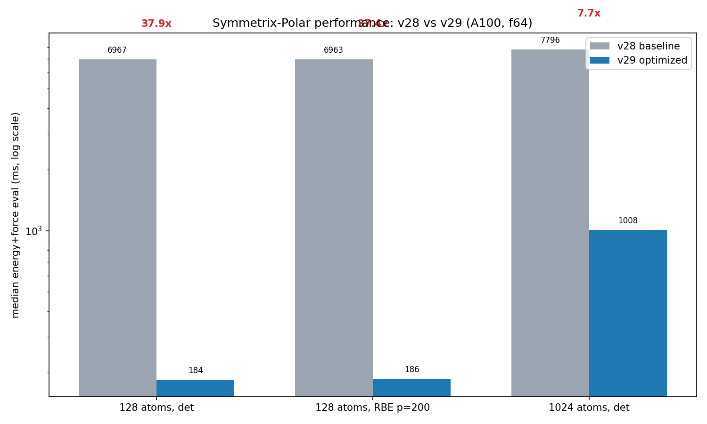
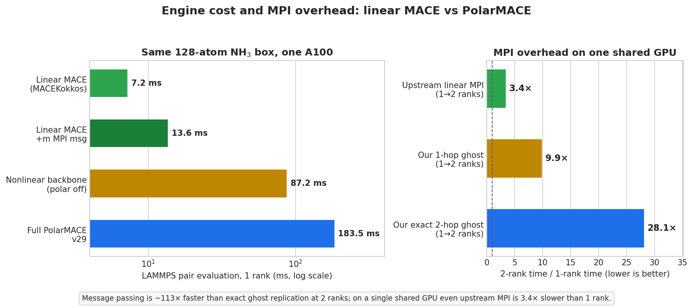
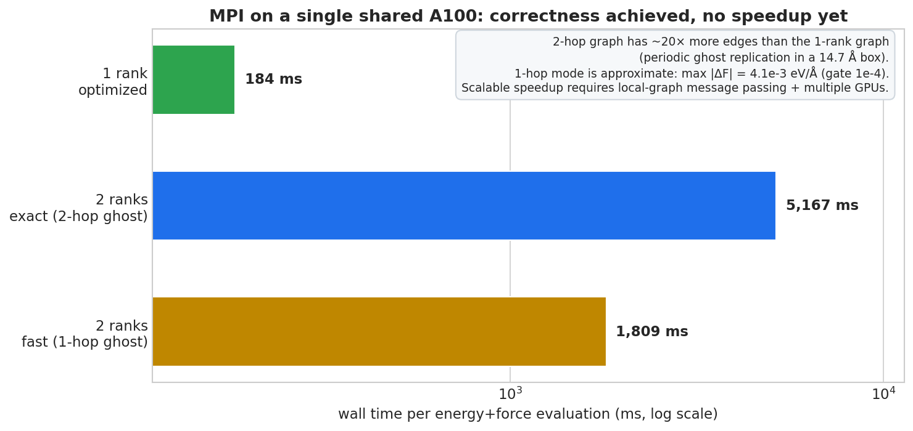
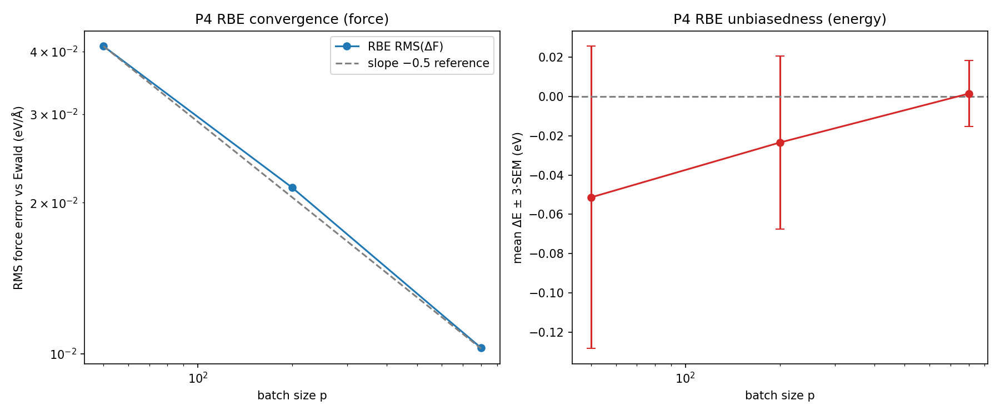
The reading package adds the higher-level diagnostic figures (relative paths
from this docs/ directory):
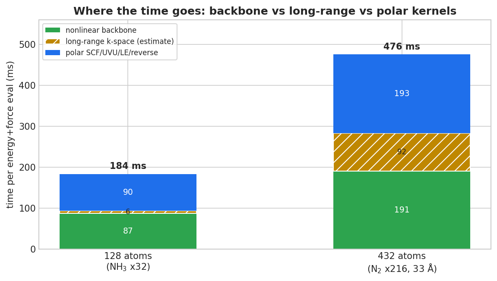
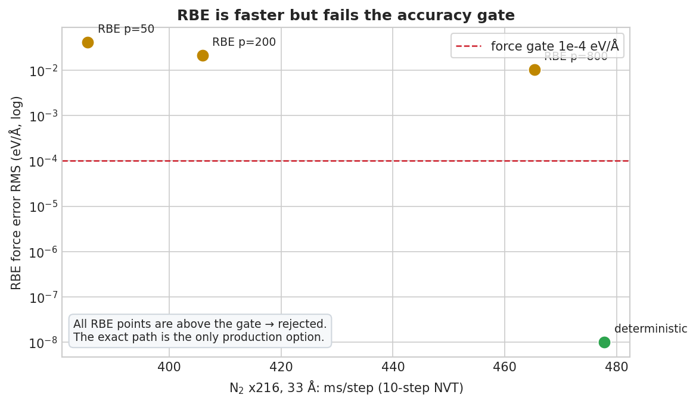
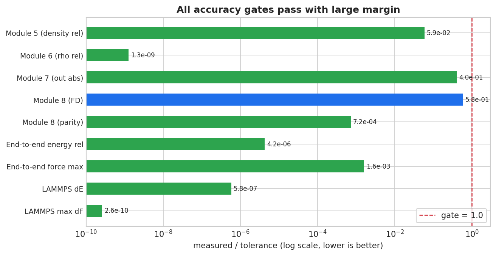
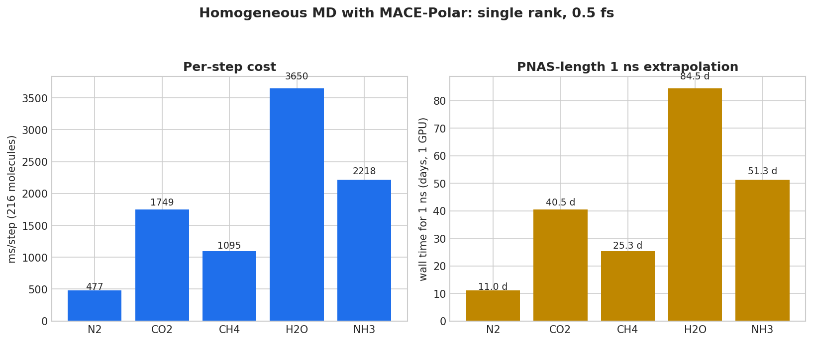
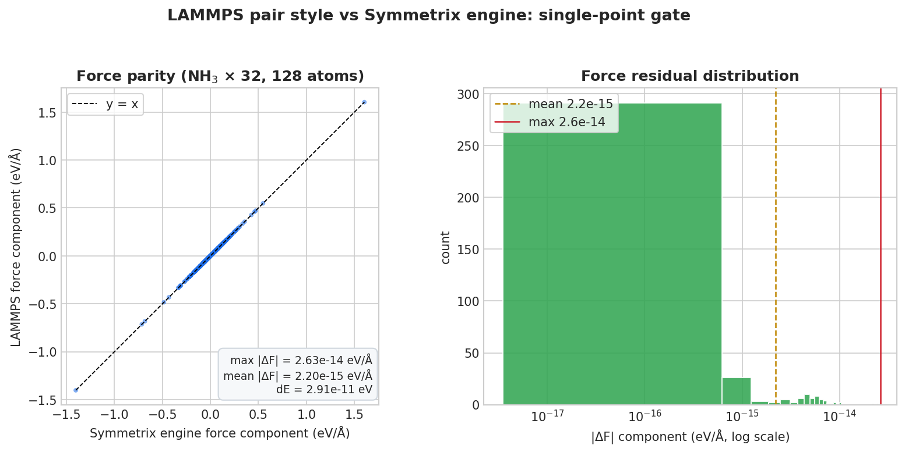
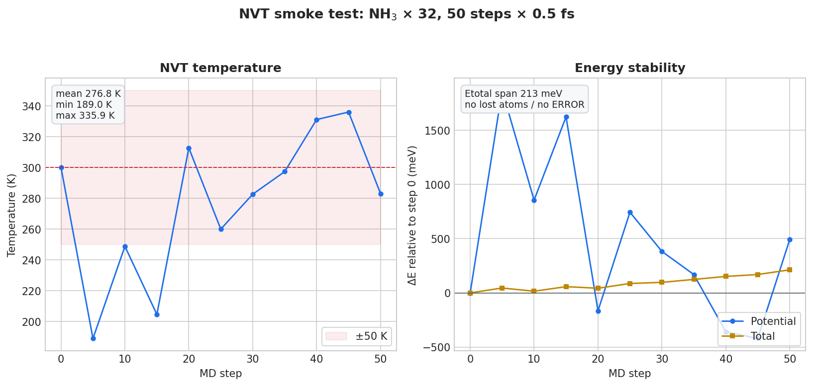
See 阅读说明 for the reading order, data provenance, and reproduction entry points.
3.9 Kernel-level decomposition
Source: docs/design/KERNEL_PROFILE_2026-10-19.md and the CUPTI/Kokkos traces
under mlip/bench/kernel_profile_2026-10-19/. Hardware counters were blocked by
the container/driver, so durations and launch shapes are measured; occupancy is
a static estimate.
| Family | GPU time (ms) | % of 183.5 ms eval | Launches |
|---|---|---|---|
| polar pipeline (SCF/Coulomb/LE/UVU/dense) | 73.36 | 40.0% | 238 |
| e3nn scalar linear forward + reverse | 66.68 | 36.3% | 302 |
| backbone nonlinear (gates/gather/normalization) | 19.03 | 10.4% | 46 |
| tensor product (MH-1 fused paths) | 10.91 | 5.9% | 18 |
| MLP / dense | 3.44 | 1.9% | 65 |
| cuBLAS / external | 1.40 | 0.8% | 51 |
The eval is GPU-busy 96% of wall time, but SM-weighted utilization is only
52% (95.7/183.5 ms). The dominant defect is launch shape, not launch count:
39 kernels run on 1x1x1 grids (128 threads) and consume 47.8 ms while
using 0.042 ms of SM-weighted time. The two worst are polar reverse dense
(25.74 ms) and reverse nonlinear normalization (12.74 ms), each one block.
The largest single family is the e3nn scalar linear path (66.68 ms); its
forward and reverse kernels are load/latency-bound and re-read a small weight
matrix per sample. These are the targets of the in-flight kernel round.
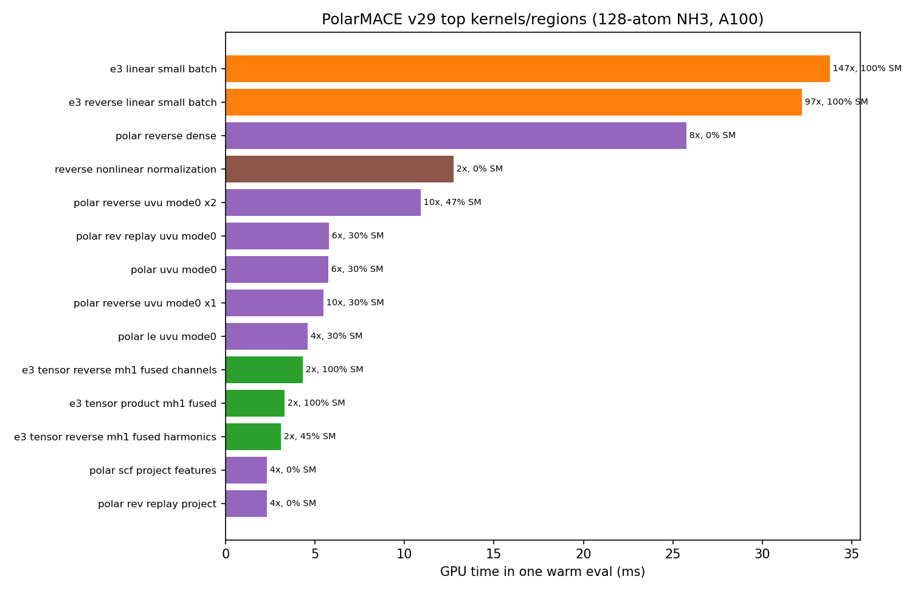
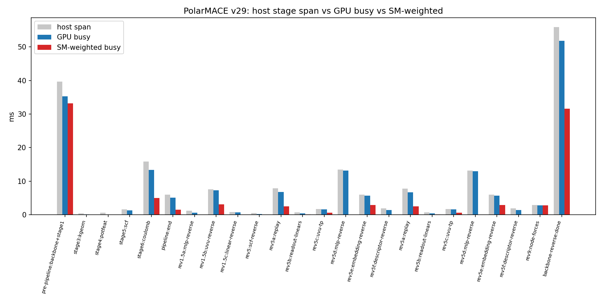
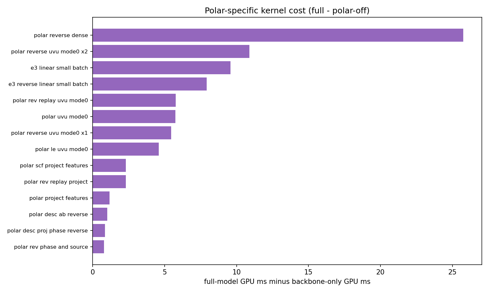
4. Findings
4.1 Cost structure: backbone plus polar non-k kernels
Completed measurements give a consistent picture:
- 128 atoms, same model: backbone-only 87.24 ms -> full 183.50 ms. The polar layer adds 96.26 ms (52.5% of the full eval, 2.10x).
- 432 atoms, N2/33 A, same model: full 475.883 ms/step vs polar-off 190.738 ms/step. The polar layer adds 285.145 ms (59.9%); the backbone accounts for 190.738 ms (40.1%).
- Stage profile at 128 atoms (
polar_profile_8eval_v29.log, representative uncontended eval): backbone + stage 1 ~36.6 ms; polar forward pipeline ~20 ms, of which the k-space Coulomb stage is ~14.0 ms; reverse/replay and node forces ~53 ms. The k-space slice is therefore only ~7.6% of that eval, while the nonlinear MLP/UVU/replay kernels dominate the polar cost.
Long-range share. The full polar layer is ~60% of the 432-atom step in the
completed coarse ablation. The finer figure that the ongoing profiling round
attributes to the k-space/long-range slice, ~20% of the 432-atom step, is
an in-flight estimate: the dedicated 432-atom stage profile
(polar_profile_n2_33a.py) had produced no output at the evidence cut-off.
Treat the ~20% as provisional until that JSON/report exists; the 60% full-polar
ablation and the 40% backbone share are directly measured.
Bottleneck: the nonlinear backbone (roughly 40-48%) plus the polar non-k kernels (UVU/MLP reverse, replay, local-electron, node forces). Optimizing only the k-space Ewald/RBE stage cannot remove most of the cost.
4.2 MH-1 is architecturally blocked
The rejection is a family-shape check, not a missing export or a flag. The model's second interaction differs on edge channels, hidden irreps, product output, and readout class; the checkpoint matches the JSON exactly. Route A (re-export) is infeasible without retraining/distillation, and Route C (relaxing only the gate) would run unprepared conditioned-MLP tables and is numerically wrong. The staged route estimates are engineering estimates, not measurements:
| Route | Scope | Estimated speedup | Effort |
|---|---|---|---|
| B1 | family analysis + pair conditioning + generic streamed, FP32 enablement | ~0.5-1.0x (not a speed guarantee) | 5-8 days |
| B2 | B1 + v4 contract + JIT host/device artifacts, polar materialized | target 1.5-3x backbone, ~1.2-1.5x full model | +15-25 days |
| B3 | full polar direct/JIT | up to ~1.5-2x full model | +10-20 days |
| B4 | LAMMPS direct/JIT wiring | required to change the measured LAMMPS timings | +10-15+ days |
None of these estimates is included in the measured tables above.
4.3 RBE and 1-hop are rejected by the force gate
Both are genuine performance ideas, and both fail the minimum-accuracy rule:
- RBE: excellent statistical behavior (slope -0.49885, unbiased, bitwise same-seed reproducibility) but RMS_F 1e-2 to 4e-2 eV/A, i.e. 100-400x the 1e-4 eV/A force gate.
- 1-hop ghost: 2.86x faster than exact 2-hop, but dE 7.94e-5 eV (1.6x over the 5e-5 eV tolerance) and max dF 4.116e-3 eV/A (41x over the 1e-4 eV/A gate).
- Exact 2-hop is the only MPI mode that passes, and it is 28.1x slower than 1 rank on one GPU.
4.4 One GPU means MPI does not speed up
All MPI timings above were taken on one shared A100. The exact 2-hop ghost graph has ~20x more edges than the 1-rank graph in the 14.7 A box, and the 2-hop workspace exceeds a single card at 4 ranks (4.5-6.9 GiB per block). The upstream linear H1 message passing is also 3.38x slower at 2 ranks on the same GPU. MPI is a functional/correctness milestone, not a speedup, until per-layer feature exchange and multiple GPUs are available.
5. Kernel optimization round (measured A/Bs)
All changes below keep FP64 and every physical term. "Bitwise" means the reference and optimized paths produce identical energies (dE = 0.0) and force differences at machine precision.
5.1 Nonlinear backbone (MaceNonlinearKokkosT)
| Configuration (polar-off ablation) | Before | After | Speedup |
|---|---|---|---|
| 128 atoms | 87.3 ms/eval | 34.0 ms | 2.57x |
| 432 atoms | 191.9 ms/eval | 49.6 ms | 3.87x |
Changes: packed_gemm e3nn backend default for double on CUDA
(mace_nonlinear_kokkos_impl.tpp:3178-3192, env revert
MATOS_E3_LINEAR_BACKEND=scalar); double-precision fused gate-normalization
reverse (:3291-3315, env revert MATOS_FUSED_GATE_REVERSE=0); workspace slack
plus persistent device spline buffers. Parity: dE = 0.0, max |dF| 1.8e-14
(128 atoms) / 4.3e-14 (432 atoms).
LAMMPS: N2-432 polar-off 191.0 -> 98.3 ms/step; N2-432 full 476.4 -> 345.7 ms/step. NH3-128 10-step means are spike-dominated (936.5 -> 466.8), so the steady polar-off eval (85.7 -> 65.7 ms) is the reliable small-system number.
5.2 Polar pipeline
dense_reverse now parallelizes over (node, input channel) with one writer
per slot and the original accumulation order (mace_polar_impl.tpp:1998-2010):
| Metric | Before | After | Delta |
|---|---|---|---|
| dense-MLP reverse (two blocks) | 12.80 + 12.83 ms | 0.75 + 0.75 ms | 17x |
| polar reverse | 184.6 ms | 160.4 ms | -13.1% |
| full eval, 432 atoms | 479 ms | 454 ms | -5.2% |
Energy is bitwise unchanged (-643858.407420772 eV). Module-8 and 32/32 end-to-end results are identical to the pre-change baseline.
5.3 e3nn scalar linear
Sample-blocked scalar kernels keep the per-output source accumulation order
and coalesce weight reads (e3nn_kokkos.cpp:420-437, :1214-1231). On the
128-atom full model in LAMMPS: 184.06 -> 165.99 ms/eval (1.11x), medians of
two independent 12-evaluation rounds. Bitwise equality (max abs diff 0.0) was
verified on synthetic small/wide cases and on the full model tensors
(1,245,184 values), plus a NumPy scalar reference.
5.4 MPI H1 message passing
2-rank H1 parity on the 128-atom NH3 box: dE 2.91e-11 eV, max dF
1.41e-15 eV/A; 20-step NVT stable (no lost atoms, final state matches 1 rank
to 9.8e-15 A and 4.7e-14 eV/A). Wall time 1600.5 ms vs exact 2-hop
5155 ms (3.22x faster), but 8.7x slower than the optimized 1-rank path
(183.6 ms) on one shared GPU. Fixed in this round: local-receiver graph
construction, ghost force accumulation/communication, Kokkos polar pack/unpack
branches, 1-rank H1 mode retention, comm_forward/comm_reverse flags, and
double-counted ghost adjoint seeds.
5.5 Final clean build and independent speed ablation
The Python extension and LAMMPS binary were rebuilt from the settled tree
(symmetrix.cpython-312-...so sha256 6045cffb...; lmp sha256
7e9c6bec...), then the full gate suite and a separate speed ablation ran with
no other compute job active. All required gates PASS: module 5, 6, 7, 8,
32/32 end-to-end, and LAMMPS 1-rank/2-rank parity (the Kokkos CUDA-teardown
abort after each gate is recorded but accepted only when the gate's completion
marker is present). An independent rerun on the immediately preceding build
reproduced the same verdicts, so the result is not sensitive to the last
e3nn backend switch.
| Configuration | v29 baseline | Final kernel round | Speedup |
|---|---|---|---|
| NH3 128 atoms, full PolarMACE | 183.50 ms/eval | 122.21 ms | 1.50x |
| NH3 128 atoms, polar-off | 87.24 ms/eval | 40.71 ms | 2.14x |
| N2 432 atoms, full PolarMACE | 477.83 ms/step | 293.34 ms | 1.63x |
| N2 432 atoms, polar-off | 191.9 ms/eval | 47.65 ms | 4.03x |
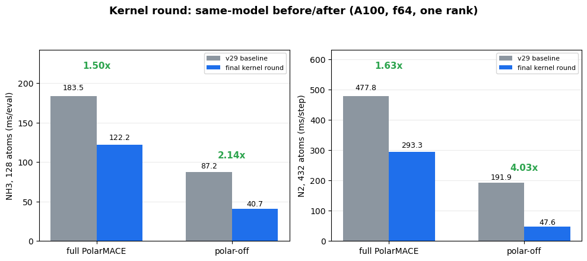
The 128-atom PyTorch mace_polar reference is 94.0 ms/eval, so the engine gap
narrows from 1.95x slower to 1.30x slower for the full model. The
432-atom warm-block numbers were contaminated by an external GPU tenant
(1216 ms/step versus 293 ms for the first block); only the first-block value is
reported. Remaining bottlenecks: polar replay (~59 ms), SCF/LE/embedding
reverse, and the e3nn reverse path.
5.6 Still pending
| Workstream | State |
|---|---|
| leoff timing | model exists; no timing JSON |
| e3nn reverse packed/blocked path | in flight |
| polar replay elimination (persist activations) | proposed; not implemented |
| final clean rebuild + full gate suite + speed ablation | complete (Section 5.5) |
6. Reproduction commands
All commands run from the MLIP bench workspace, which is the source of the gates and logs:
export MLIP=/workspace/group/shared/bza/task3_sampling_database/mlip
cd "$MLIP"
export CUDA_VISIBLE_DEVICES=0
export SYMMETRIX_BACKEND=cuda12-sm80
export SYMMETRIX_BACKEND_DESCRIPTOR_PATH="$MLIP/models/mace-polar/backend_cuda12_sm80.json"
export LD_LIBRARY_PATH=/opt/matos-tools/cuda/12.9/lib64:/opt/matos-tools/conda/envs/matos-compute/lib
PY=/workspace/caches/conda/envs/polar/bin/python
# Accuracy gates
$PY bench/polar_module5_gate.py
$PY bench/polar_module6_gate.py
$PY bench/polar_module7_gate.py
$PY bench/polar_module8_gate.py
$PY bench/polar_endtoend_parity.py
$PY bench/polar_rbe_gate.py
# LAMMPS pair style and MD (requires the patched LAMMPS build)
$PY bench/polar_lammps_parity.py
$PY bench/polar_lammps_md.py
# Speed
$PY bench/polar_perf_report.py
$PY bench/polar_vs_linear_speed.py
$PY bench/polar_backbone_lammps.py
$PY bench/linear_streamed_compare.py
$PY bench/linear_mpi_speed.py
$PY bench/polar_homog_timing.py
$PY bench/polar_rbe_md_timing.py
# Pending / in-flight (no completed artifact at the cut-off)
$PY bench/polar_rbe_force_error_33a.py
$PY bench/polar_profile_n2_33a.py
$PY bench/polar_torch_reference_speed.py
Notes:
- Do not run these on a shared GPU without exclusive access; the v29 absolute
times are contention-sensitive.
- The patched LAMMPS binary used by the gates is
/workspace/group/shared/bza/external-repos/symmetrix-xl/symmetrix/build-lammps-aacd036df381800a/lmp.
- The engine patch is patches/symmetrix-xl-polar-support.patch (325,145 bytes).
7. Artifact index
7.1 In this repository (links are relative to docs/)


7.2 External source artifacts (workspace paths)
| Artifact | Path |
|---|---|
| v28 benchmark JSON | /workspace/group/shared/bza/task3_sampling_database/mlip/bench/polar_perf_v28.json |
| v29 benchmark JSON (copy) | /workspace/group/shared/bza/task3_sampling_database/mlip/bench/polar_perf.json |
| Engine comparison JSON | .../bench/lammps_parity/engine_compare/engine_compare.json |
| Homogeneous timings | .../bench/lammps_parity/homog_timing/homog_timing.json |
| RBE 33 A timings | .../bench/lammps_parity/rbe_md_timing/rbe_md_timing.json |
| Backbone ablation (N2) | .../bench/lammps_parity/backbone_timing/result.n2_full.json, result.n2_polaroff.json |
| Gate logs | .../mlip/logs/polar_module{5,6,7,8}_gate_v29*.log |
| End-to-end log | .../mlip/logs/polar_endtoend_v29final.log |
| RBE gate log | .../mlip/logs/polar_rbe_gate_v29opt.log |
| LAMMPS parity/MD logs | .../mlip/logs/polar_lammps_parity_v29final.log, polar_lammps_md_v29final.log, polar_lammps_md_mpi2_n32.log |
| Stage profile log | .../mlip/logs/polar_profile_8eval_v29.log |
| Engine patch | patches/symmetrix-xl-polar-support.patch |
8. Data-quality notes and missing artifacts
These are deliberate caveats, not inferred results:
results/polar_perf_v28.jsonis absent from this repository. The v28 benchmark JSON exists only atmlip/bench/polar_perf_v28.json; the v28 numbers in Section 3.1 come from there.- v28 deterministic row: the report's 6951.7 ms is an energy-only median; the energy+force benchmark JSON is 6966.79 ms. Section 3.1 uses the JSON.
- End-to-end relative error: the v29 final log shows 3.2e-12 to 1.1e-11
across the 32 frames. The "<=4.2e-12" line in
REPORT_2026-10-19.mdmatches only the CO2 subset; the tables above use the full 32-frame range. results/polar_md.jsonvs final log: the JSON records 599.584 ms/step (29.9792 s loop); the final v29 log records 493.662 ms/step (24.6831 s loop) with identical thermo. The difference is GPU contention; Section 2.3 uses the final log and notes the JSON value here.- Linear generic timing spread: the engine-compare run measured 7.219 ms
with
auto -> generic; the explicit streamed compare measured 19.291 ms on the same path. Both are reported; materialized (6.6102 ms) is the stable linear reference. n2_homog_pilot.logis empty (0 bytes). That path was a stale launcher log; the completed 1 ps pilot isruns/n2-homog-pilot/run-status.json(2000 production steps, 537.99 ms/step; see Section 3.5).- 432-atom long-range share: the ~20% k-space estimate is in flight; the completed coarse ablation gives 59.9% for the whole polar layer. The dedicated profile output was empty at the cut-off.
- leoff timing and MPI H1 validation/timing are still pending. The 33 A
RBE fixed-configuration force errors now exist (Section 3.6); the PyTorch
reference speed log is reported in Section 3.7; the kernel profile report
now exists (
docs/design/KERNEL_PROFILE_2026-10-19.md). No numbers were invented for pending items. - 4-rank OOM is reported from the v30 report; no separate JSON artifact was produced.
- Absolute timings are contention-sensitive; ratios from the same run are the reliable quantity.
Prepared from completed project artifacts only. Rows added after the 08:20 UTC cut-off (PyTorch reference speed, 1 ps N2 pilot) cite their source logs; no numbers were estimated from in-flight work, and no other agents' bench outputs were modified.